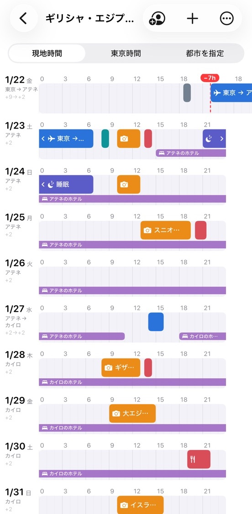
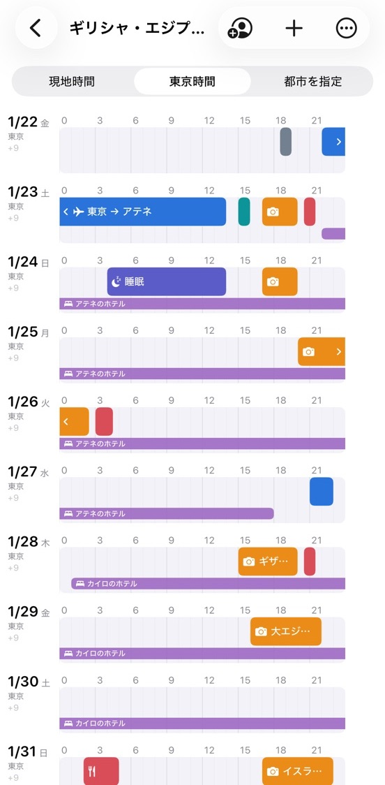
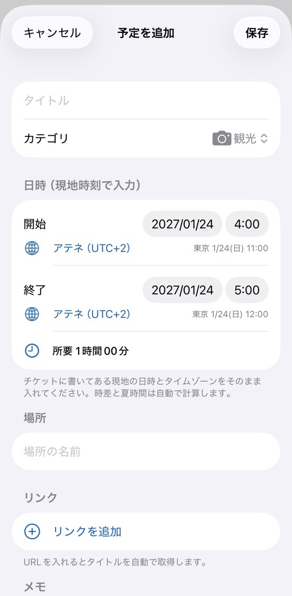

時差・日付またぎで迷わない、旅程の「数直線」アプリ
海外旅行の旅程を1日＝1本の時間の数直線に並べて、「何時〜何時：何をする」のブロックで埋めていく iPhone アプリです。予定はチケットに書いてあるとおり現地の日時とタイムゾーンで入れるだけ。フライトで日付が変わっても、時差や夏時間があっても、行の長さと時刻の切り替わりを自動で計算します。
日ごとの横向きの数直線を縦に並べて表示。空いている時間がひと目で分かり、空きをタップするとその時刻から予定を追加できます。
「1/22 22:00 東京発 → 1/23 7:00 アテネ着」のように、現地の日時とタイムゾーンをそのまま入力。所要時間はその場で表示されます。
「現地時間」表示では、西へ飛ぶ日は行が長く、東へ飛ぶ日は短くなります。時計が切り替わる地点には「−7h」のような印が付きます。
表示を「東京時間」や好きな都市の時間に切り替えられます。予定の詳細には、現地の時刻と日本時間を並べて表示します。
旅行ごとに iCloud で共有。招待リンクを LINE やメッセージで送れます。相手の権限は「閲覧のみ」か「編集可」から選べます。
予約確認やお店のページなど、タイトル付きのリンクを予定ごとに複数登録。場所は地図アプリで開けます。



※ 開発中の画面です。旅程はサンプルです。
| 公開状況 | テスト中（TestFlight） |
|---|---|
| 対応OS | iOS 17.0 以降 |
| 対応端末 | iPhone（縦・横） |
| 価格 | 無料 |
| アカウント | 登録・ログインは不要です（共有には iCloud を使います） |
ご意見・ご要望・不具合のご報告は、下のメールアドレスまでお願いします。
お返事までに数日かかることがあります。不具合のご報告の際は、iPhone の機種・iOS のバージョン・どの画面で何をしたときに起きたかを添えていただけると助かります。
SHIORI は、氏名やメールアドレスなどの個人情報を運営者のもとへ集めません。旅行のデータは、お使いの端末とご自身の iCloud に保存されます。詳しくは プライバシーポリシー をご覧ください。